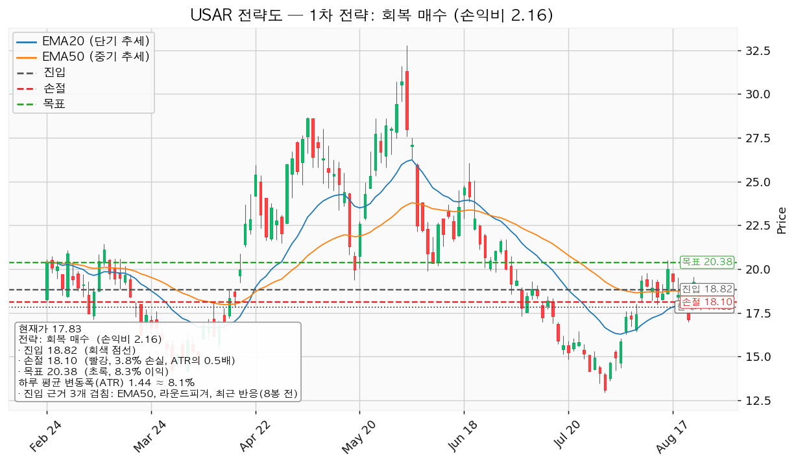
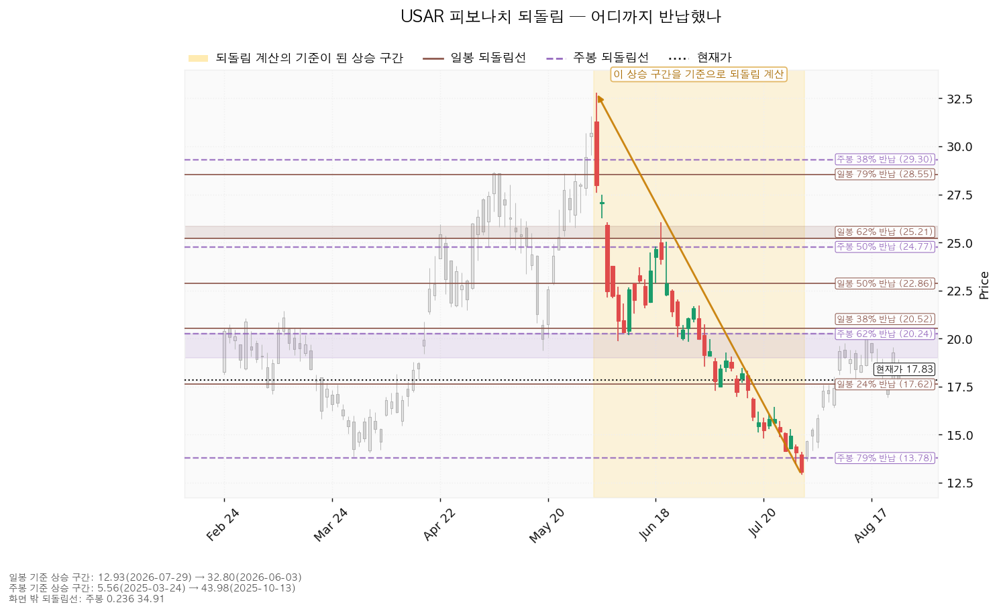
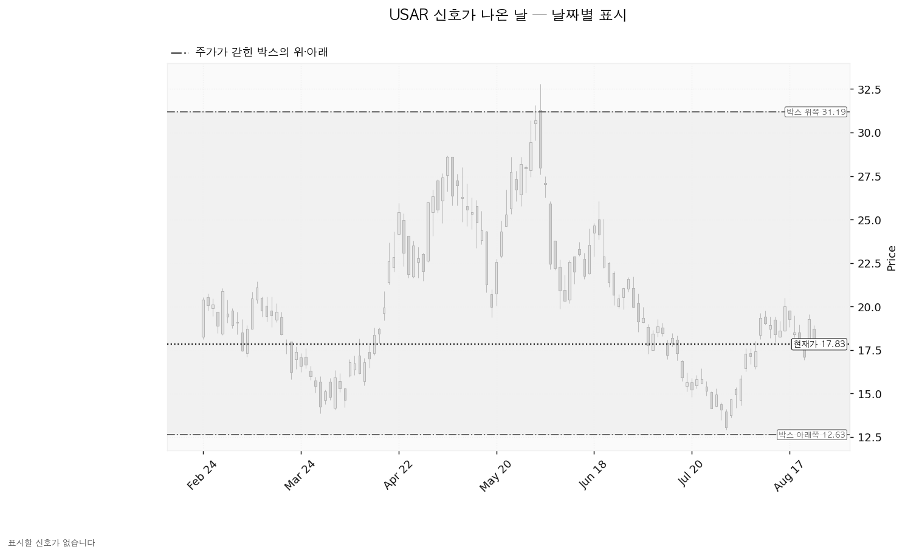
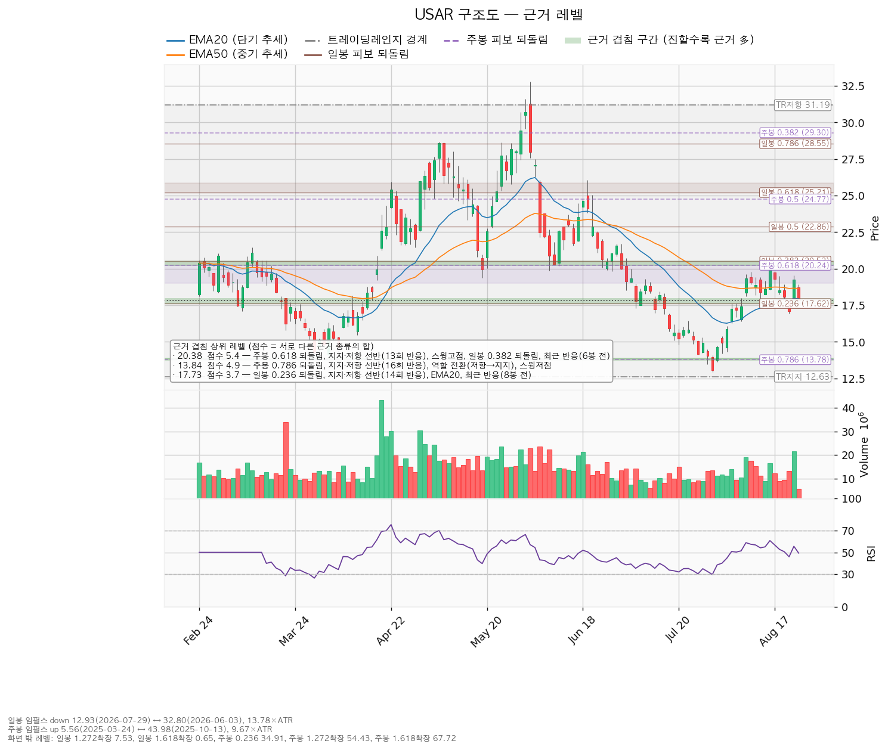

| 구분 | 가격 | 판정 방식 | 현재 상태 |
|---|---|---|---|
| 폐기선 (시나리오가 틀렸다고 볼 선) | 12.63달러 | 이탈 후 3거래일 내 회복 실패 + 반등에서 저항으로 확인 | 유지 중 |
| 회복선 (롱 전환의 최소 조건) | 18.82달러 | 일봉 종가로 회복한 뒤 되돌림에서 지지되는지 | 회복 대기 (현재가 대비 +5.56%) |
| 확인선 (상승 전환 확정) | 31.19달러 | 일봉 종가 돌파 후 되돌림 지지 확인 | 미돌파 |
| 항목 | 값 | 의미 |
|---|---|---|
| 현재가 | 17.83달러 | — |
| EMA20 (최근 20일 평균 흐름) | 17.96달러 | 현재가가 바로 아래에 위치 |
| EMA50 (최근 50일 평균 흐름) | 18.64달러 | 중기 흐름선 아래 — 아직 반등 미완 |
| RSI(14) (과열·침체 온도계, 50이 중립) | 49.29 | 정확히 중립 — 방향성 없음 |
| ATR (하루 평균 변동폭) | 1.44달러 (현재가의 약 8.1%) | 하루에 8% 흔들리는 종목 |
| 추세 판정 | 하락 / 국면은 횡보 레인지 | "구조 유지 — 하단 사수 조건부" |
| 컨센서스 목표주가 | 37.38달러 | 추천등급 strong_buy |
| 예상 주당순이익 | -0.043달러 (적자) | PER 산출 불가 |
엔진은 조회된 일봉 752개 중 40봉·90봉·180봉 세 창을 모두 시험했습니다.
| 시험한 창 | 가격이 박스 안에 머문 비율 | 박스가 기울어진 정도 | 폭(하루 변동폭 배수) | 박스로 인정 |
|---|---|---|---|---|
| 40봉 | 0.575 | 0.03 | 2.70배 | 인정 안 됨 |
| 90봉 | 0.922 | 0.50 | 10.42배 | 인정 |
| 180봉 (채택) | 0.989 | 0.057 | 12.87배 | 인정 |
채택된 것은 최근 180거래일(약 9개월) 박스이며, 범위는 12.63 ~ 31.19달러입니다. 가격이 이 박스 안에 머문 비율이 98.9%로 세 후보 중 가장 높고 기울기도 가장 평탄해 이 창이 선택됐습니다.
직전 구간과의 관계: 직전 180봉 구간은 7.27 ~ 27.58달러였고, 지금 박스와 가격대가 겹칩니다. 즉 위에서 내려와 만든 박스도, 아래에서 올라와 만든 박스도 아닌 같은 횡보의 연장입니다.
매집과 재분산은 차트에서 똑같은 사각형을 그립니다. 갈리는 것은 박스 안쪽입니다.
| 관측 항목 | 값 | 해석 |
|---|---|---|
| 지지 테스트 시 거래량 추세 | 증가 | 바닥을 건드릴수록 매도 물량이 늘고 있음 — 나쁜 신호 |
| 박스 내 저점 | 절하 (낮아짐) | 13.94 → 11.73 → 13.87 → 14.82 → 12.93 |
| 상승봉 대 하락봉 거래량비 | 1.0 | 사는 쪽과 파는 쪽이 정확히 대등 — 우위 없음 |
지지 테스트 이력: 2025-12-04 저가 13.94(평균 거래량의 1.00배), 2025-12-31 저가 11.73(0.76배), 2026-03-30 저가 13.87(0.97배), 2026-07-20 저가 14.82(1.33배), 2026-07-29 저가 12.93(1.29배). 최근 두 번의 테스트에서 거래량이 평균의 1.3배 수준으로 뛰었다는 점이 핵심입니다.
가격대 — 같은 횡보의 연장으로 해석. 레인지 내부 근거: 지지 테스트마다 매도 거래량 증가, 레인지 내 저점 절하."
않았습니다. 박스는 유효하게 인정됐으므로 이는 "판정 보류"가 아니라 "판정은 했으나 이벤트가 없었다"**는 뜻입니다. 방향을 확정해 줄 결정적 캔들이 아직 나오지 않은 상태입니다.
시나리오가 아니라 가장 확률 높은 기본값입니다.
| 추적 항목 | 좋아지는 모습 | 현재 관측 |
|---|---|---|
| 지지 테스트 시 거래량 | 줄어들어야 함 | 증가 중 (아직 개선 없음) |
| 박스 내 저점 | 절상되어야 함 | 절하 (아직 개선 없음) |
| 상승봉 대 하락봉 거래량비 | 1.0보다 커져야 함 | 1.0 (대등) |
세 항목이 하나씩 뒤집히기 시작하면 분산 판정이 매집 판정으로 바뀌고, 그때 "지지 확인 매수" 셋업이 엔진에서 새로 산출될 수 있습니다. 지금은 기다리는 것이 포지션입니다.
엔진이 산출한 셋업은 한 개입니다. 하락·중립 국면이므로 되돌림 저가매수는 제시되지 않으며, 저항을 회복했을 때만 롱으로 전환하는 형태만 남습니다. (개별 종목 매도 셋업은 제시하지 않습니다.)
| 항목 | 회복 매수 (reclaim_long) — 대표 셋업 |
|---|---|
| 방향 | 롱 (매수) |
| 구조 증명도 | 회복 확인형 — 저항을 종가로 회복한 뒤에만 진입. 진입가는 불리하나 구조가 먼저 증명됨 |
| 진입 | 18.82달러 (현재가 대비 +5.56%, 하루 변동폭의 0.69배 위) |
| 진입 근거 | 3개 겹침 (점수 2.1) — EMA50, 라운드피겨(19달러), 최근 반응(8봉 전). 구간 18.64~19.00 |
| 손절 | 18.10달러 (약 -3.8%) |
| 손절 근거 | 진입 기준선에서 하루 평균 변동폭(1.44달러)의 0.5배 아래. 근거 겹침 구간 아래로 밀어낸 손절이 아니라, 진입선 바로 밑에 붙인 타이트한 손절입니다 |
| 목표 | 20.38달러 (약 +8.3%) |
| 목표 근거 | 5개 겹침 (점수 5.4 — 전체 1위 방어벽) — 주봉 62% 되돌림, 지지·저항 선반(13회 반응), 스윙고점, 일봉 38% 되돌림, 최근 반응(6봉 전) |
| 손익비 | 1 : 2.16 |
T1 19.75달러에서 50% 익절 → 잔여분 손절을 진입가 18.82달러(본전)로 이동 → T2 20.38달러에서 나머지 50% 청산
잘리는 최악의 경우 기대값이 1을 밑돕니다. 이 셋업은 T2까지 끌고 가야 의미가 있는 구조임을 전제로 진입해야 합니다.
대표 셋업 선정 이유: "손익비 2.16 × 구조 증명도(회복 확인형) × 근거 겹침 2.1점으로 선정. 저항을 종가로 회복한 뒤에만 진입한다 — 진입가는 불리하나 구조가 먼저 증명된다." 이번에는 셋업이 하나뿐이라 손익비 1등과 대표 셋업 사이의 상충은 발생하지 않았습니다.
현재가 추격 여부: 이 셋업의 진입가는 현재가보다 위에 있고 조건부(종가 회복)이므로, 엔진은 현재가 추격 비권장 표시를 붙이지 않았습니다. 다만 이는 "지금 사도 된다"는 뜻이 아니라 "18.82달러 종가 회복 전까지는 진입 자체가 성립하지 않는다"는 뜻입니다.

두 시간축 모두 계산됐습니다.
일봉 기준: 기준 구간은 32.80달러(2026-06-03 고점) → 12.93달러(2026-07-29 저점)의 하락 구간이며, 길이는 하루 변동폭의 13.78배입니다. 되돌림선은 이 하락을 얼마나 되돌렸는지를 뜻합니다.
| 되돌림 | 가격 | 위치 |
|---|---|---|
| 24% 반납 | 17.62달러 | 현재가 바로 아래 — 지금 여기서 버티는 중 |
| 38% 반납 | 20.52달러 | 목표 20.38달러와 같은 구간 |
| 50% 반납 | 22.87달러 | |
| 62% 반납 | 25.21달러 | 골든포켓 하단 |
| 79% 반납 | 28.55달러 |
주봉 기준: 기준 구간은 5.56달러(2025-03-24) → 43.98달러(2025-10-13)의 상승 구간이며, 길이는 주봉 변동폭의 9.67배입니다.
| 되돌림 | 가격 | 위치 |
|---|---|---|
| 62% 반납 | 20.24달러 | 골든포켓 상단 — 목표 20.38달러와 겹침 |
| 79% 반납 | 13.78달러 | 큰 그림의 마지막 보루 |
현재가 17.83달러는 주봉 62% 반납(20.24)과 79% 반납(13.78) 사이의 빈 공간에 있습니다. 위아래 어느 쪽으로도 강한 지지대가 붙어 있지 않은 자리이며, 이것이 지금 관망을 권하는 구조적 이유입니다.

박스는 유효하게 인정됐지만, 조회 구간 안에서 스프링(하단 속임수 이탈 후 회복), 업스러스트 (상단 속임수 돌파 후 실패), 강세 신호, 약세 신호 중 어느 것도 발생하지 않았습니다. 아래 차트에 색으로 표시된 캔들이 하나도 없는 이유입니다. 방향을 확정해 줄 결정적 캔들이 아직 나오지 않은 상태이며, 이는 위 ②번 "횡보 지속" 시나리오와 정확히 일치하는 그림입니다.

겹침 점수는 서로 다른 종류의 근거가 같은 가격대에 몇 개나 모였는지를 가중 합산한 값입니다. 같은 종류(예: 일봉 되돌림선 3개)가 여러 개 붙어도 한 번만 가산되므로, 점수가 높을수록 성격이 다른 증거들이 한 자리를 가리키고 있다는 뜻입니다.
| 가격 | 점수 | 근거 목록 | 성격 |
|---|---|---|---|
| 20.38달러 | 5.4 | 주봉 62% 되돌림, 지지·저항 선반(13회 반응), 스윙고점, 일봉 38% 되돌림, 최근 반응(6봉 전) | 최상단 저항 — 대표 셋업의 목표 |
| 13.84달러 | 4.9 | 주봉 79% 되돌림, 지지·저항 선반(16회 반응), 역할 전환(저항→지지), 스윙저점 | 최강 지지 — 마지막 보루 |
| 17.73달러 | 3.7 | 일봉 24% 되돌림, 지지·저항 선반(14회 반응), EMA20, 최근 반응(8봉 전) | 현재가가 딛고 선 자리 |
| 15.10달러 | 3.3 | 라운드피겨, 선반(14회 반응), 역할 전환(저항→지지), 최근 반응(25봉 전) | 중간 지지 |
| 16.86달러 | 3.3 | 선반(16회 반응), 역할 전환(저항→지지), 라운드피겨, 최근 반응(23봉 전) | 1차 지지 |
| 12.78달러 | 2.9 | 박스 하단, 스윙저점, 최근 반응(18봉 전) | 폐기선 구간 |
| 18.82달러 | 2.1 | EMA50, 라운드피겨, 최근 반응(8봉 전) | 회복선 — 진입 조건 |
| 24.99달러 | 2.5 | 주봉 50% 되돌림, 일봉 62% 되돌림 | 상단 저항 |
| 31.19달러 | 1.2 | 박스 상단 | 확인선 |
주요 선반 목록: 16.79달러(16회 반응, 저항→지지 전환, 최근 2거래일 전), 13.85달러(16회 반응, 저항→지지 전환), 17.62달러(14회 반응, 오늘도 반응), 15.14달러(14회 반응, 저항→지지 전환), 11.91달러(14회 반응, 저항→지지 전환), 20.25달러(13회 반응, 6거래일 전 반응).

이전 리포트는 현재가 19.26달러 시점에 작성됐고, 대표 셋업은 돌파 매수(진입 20.42달러 / 손절 19.70달러 / 손익비 6.39), 되돌림 매수 13.82달러는 보류였습니다. 이번 재분석에서는 세 가지가 바뀌었습니다. 첫째, 현재가가 17.83달러로 내려오면서 돌파 매수 시나리오 자체가 성립 범위를 벗어났고, 대표 셋업이 회복 매수(진입 18.82달러 / 손절 18.10달러 / 손익비 2.16)로 교체됐습니다. 손익비 6.39가 2.16으로 낮아진 것은 종목이 나빠져서가 아니라, 구조가 증명되지 않은 선취형 진입(돌파 대기)에서 구조를 먼저 확인하는 회복 확인형 진입으로 성격이 바뀌었기 때문입니다. 높은 손익비는 대개 "아직 증명되지 않은 구조"의 대가입니다. 둘째, 새 엔진의 지지·저항 선반 근거가 도입되면서 20.38달러 목표대의 겹침 점수가 5.4로 올라가 목표의 신뢰도가 높아진 반면, 이전에 보류로 표시했던 13.82달러 되돌림 매수 구간은 13.84달러(점수 4.9, 16회 반응 선반 + 저항→지지 역할 전환)로 근거가 오히려 강화됐습니다 — 다만 여전히 박스 안쪽이 분산 우위이므로 저가매수 셋업으로는 산출되지 않았습니다. 셋째, 박스 판정 창이 180봉으로 확정되고 내부 판정이 '분산 우위'로 나오면서, 신규 엔진이 새로 도입한 "지지 확인 매수" 셋업이 USAR에는 산출되지 않았습니다. 결론적으로 적극적 진입 조건이 이전보다 뒤로 밀렸고, 매수 트리거는 돌파에서 회복으로 바뀌었습니다.
| 항목 | 값 | 기술적 구조와의 정합성 |
|---|---|---|
| 애널리스트 목표주가 평균 | 37.38달러 | 현재가 17.83달러의 두 배가 넘는 자리이며, 박스 상단 31.19달러보다도 위 — 아직 그 상단조차 미돌파 |
| 추천등급 | strong_buy | 구조(분산 우위·저점 절하)와 정면으로 어긋남 |
| 예상 주당순이익 | -0.043달러 (적자) | PER 산출 불가 — 밸류에이션 검증 수단 없음 |
이번 분석에서 가격·지표 조회 실패나 결측은 없었습니다. 일봉 752개가 정상 조회됐고, 일봉·주봉 되돌림 모두 유효한 기준 구간을 찾아 계산됐습니다. 다만 예상 주당순이익이 적자여서 PER 기반 밸류에이션 검증은 불가능하다는 점, 그리고 박스 내 신호일이 하나도 잡히지 않아 방향 확정 근거가 부족하다는 점을 함께 밝힙니다.